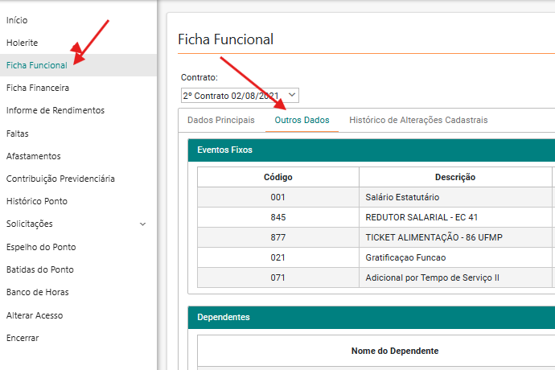

1
Primeiro acessoAcesse a Ficha Funcional em Outros Dados
Siga exatamente esta ordem:
- Entre no seu Holerite
- Clique em Ficha Funcional
- Na janela que abrir, clique na guia Outros Dados
💡 Onde clicar: Holerite → Ficha Funcional → guia Outros Dados

🔍 Clique para ampliar